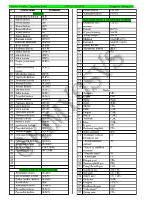

KMKimyoviy moddalar va ularning formulalari bo'yicha qisqacha ma'lumotnoma.
Ushbu qo'llanma kimyoviy moddalar, kislotalar, gazlar va turli elementlarning formulalarini o'z ichiga olgan qisqacha ma'lumotnomadir. Unda makro va mikroelementlar, o'g'itlar hamda sanoatda keng qo'llaniladigan birikmalarning kimyoviy tarkibi keltirilgan.